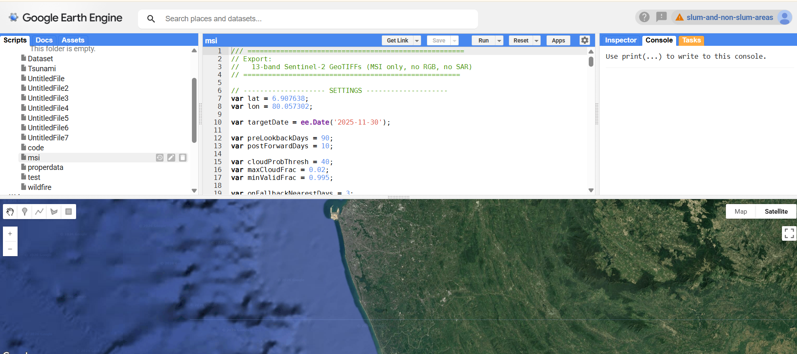

Weekly Progress
Week 6 - Project Progress
This week I expanded the dataset from RGB-only triplets to RGB + Sentinel-2 MSI triplets. I also built a cloud-aware GEE export flow for 13-band GeoTIFF patches.
At a glance
MSI coverage boost
Main progress, tools, and next steps from the MSI expansion work.
Objectives
- Extend the dataset from RGB-only to include Sentinel-2 MSI triplets.
- Build a stable cloud-aware export workflow in Google Earth Engine.
- Document why MSI bands improve change detection.
Work Done
- Added aligned 13-band Sentinel-2 triplets for the same RGB events.
- Used cloud probability + valid-pixel checks for image selection.
- Exported fixed-size cloud-optimized GeoTIFF patches.
- Reviewed one Sentinel-2 urban change paper for feature ideas.
Tools / Methods Used
- Google Earth Engine Sentinel-2 MSI retrieval + export.
- COPERNICUS/S2_HARMONIZED multispectral imagery.
- COPERNICUS/S2_CLOUD_PROBABILITY cloud probability filtering.
- Window-based selection: Before, On (or nearest), After.
Results / Observations
- Each event can now include both RGB and MSI triplets.
- MSI adds red-edge, NIR, and SWIR cues not present in RGB.
- Quality filtering is critical, especially for the On-date image.
Next Week Plan
- Batch export MSI triplets for more events.
- Compute indices such as NDVI, NDWI, and NBR.
- Confirm RGB and MSI footprint alignment.
Pipeline deep dive
Cloud-aware Sentinel-2 exports
Short overview of setup, export logic, and why MSI bands help.
GEE Setup (MSI Export Interface)
Screenshot of the GEE setup used to export 13-band Sentinel-2 MSI triplets.

GEE Export Snippet (Reduced)
Short version of the GEE script for selecting and exporting MSI triplets.
// Sentinel-2 MSI triplet export (short version)
var targetDate = ee.Date('2025-11-30');
var preLookbackDays = 90, postForwardDays = 10, nearestDays = 3;
var outCRS = 'EPSG:32644', outScale = 10, exportDimensions = '316x316';
var outFolder = 'dataset';
var exportUtm = /* your fixed patch geometry */;
var s2Bands13 = ['B1','B2','B3','B4','B5','B6','B7','B8','B8A','B9','B10','B11','B12'];
var joined = ee.ImageCollection(ee.Join.saveFirst('cloudprob').apply({
primary: ee.ImageCollection('COPERNICUS/S2_HARMONIZED').filterBounds(exportUtm),
secondary: ee.ImageCollection('COPERNICUS/S2_CLOUD_PROBABILITY').filterBounds(exportUtm),
condition: ee.Filter.equals({leftField:'system:index', rightField:'system:index'})
}));
function bestByCloud(start, end){
return ee.Image(
joined.filterDate(start, end)
.map(function(img){
var cp = ee.Image(img.get('cloudprob')).select('probability');
var cloudFrac = ee.Number(cp.gt(40).reduceRegion({
reducer: ee.Reducer.mean(), geometry: exportUtm, scale: 20, bestEffort: true
}).get('probability'));
return img.set('cloudFrac', ee.Algorithms.If(cloudFrac, cloudFrac, 1));
})
.sort('cloudFrac')
.first()
);
}
function prep(img){
return img.select(s2Bands13).reproject({crs: outCRS, scale: outScale}).clip(exportUtm).toUint16();
}
var beforeImg = bestByCloud(targetDate.advance(-preLookbackDays, 'day'), targetDate);
var onImg = bestByCloud(targetDate.advance(-nearestDays, 'day'), targetDate.advance(nearestDays + 1, 'day'));
var afterImg = bestByCloud(targetDate.advance(1, 'day'), targetDate.advance(postForwardDays + 1, 'day'));
[
{img: prep(beforeImg), desc: 'BEFORE_S2_13B', pref: 'BEFORE_S2_13B_10km2'},
{img: prep(onImg), desc: 'ON_S2_13B', pref: 'ON_S2_13B_10km2'},
{img: prep(afterImg), desc: 'AFTER_S2_13B', pref: 'AFTER_S2_13B_10km2'}
].forEach(function(x) {
Export.image.toDrive({
image: x.img, description: x.desc, folder: outFolder,
fileNamePrefix: x.pref, region: exportUtm,
crs: outCRS, dimensions: exportDimensions,
maxPixels: 1e13, fileFormat: 'GeoTIFF',
formatOptions: {cloudOptimized: true}
});
});Tip: keep a consistent naming convention so each event has aligned RGB + MSI triplets (same region and date logic).
How We Collect MSI Triplets
- Choose event center + target date.
- Define windows:
- Before: best image from lookback window.
- On: exact or nearest clean image.
- After: best image from forward window.
- Join cloud probability, rank by patch quality, and select triplet.
- Select 13 bands, align to fixed grid, and export GeoTIFF.
Sentinel-2 MSI Bands (13-band Set)
Each timestamp includes 13 bands. The main value over RGB is red-edge, NIR, and SWIR information.
| Band | Common Name | Main Use (typical) | Resolution |
|---|---|---|---|
| B1 | Coastal aerosol | Coastal / haze, atmospheric effects | 60 m |
| B2 | Blue | Water / atmosphere, true color | 10 m |
| B3 | Green | Vegetation, true color | 10 m |
| B4 | Red | Vegetation contrast, built-up edges | 10 m |
| B5 | Red Edge 1 | Vegetation condition (chlorophyll) | 20 m |
| B6 | Red Edge 2 | Vegetation structure / stress | 20 m |
| B7 | Red Edge 3 | Vegetation structure / stress | 20 m |
| B8 | NIR | Vegetation vigor, NDVI, biomass | 10 m |
| B8A | Narrow NIR | Vegetation + atmospheric robustness | 20 m |
| B9 | Water vapor | Atmospheric correction support | 60 m |
| B10 | Cirrus | Thin cloud / cirrus detection | 60 m |
| B11 | SWIR 1 | Moisture, burn scars, soil/urban contrast | 20 m |
| B12 | SWIR 2 | Burn scars, dry vegetation, material differences | 20 m |
Why MSI Helps Change Detection (vs RGB)
- NIR/SWIR capture moisture and vegetation signals that RGB misses.
- Built-up, soil, and vegetation separate better with red-edge + SWIR bands.
- Indices (NDVI/NDWI/NBR) improve robustness across lighting changes.
Paper Study
I reviewed a Sentinel-2 urban change detection paper and extracted ideas for this dataset.
Key takeaways
- Combine spectral features with local temporal context.
- Include vegetation-aware features to reduce false change alerts.
- MSI triplets support stronger baselines than RGB-only inputs.
These points will guide band/index selection for the next baseline.